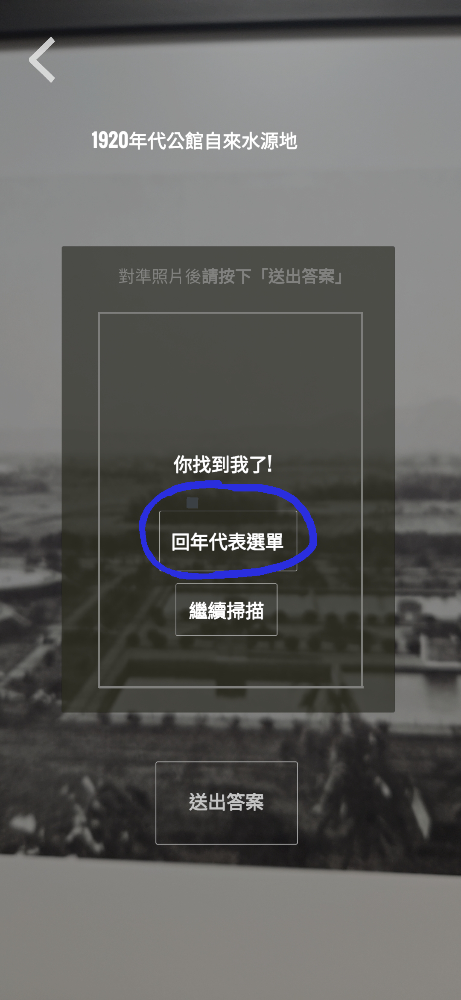
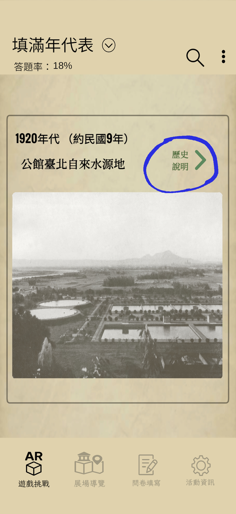

AR GUIDE
尋找老照片 AR 小遊戲 APP 說明
本APP支援iphone15及Android10以上版本，於展場QR Code下載APP後，您可選擇觀看下方說明影片，或依照步驟完成挑戰。
*答對5題可以找櫃檯領禮物，加油！
1
先找到正確的老照片
請先在 APP 下方選擇「遊戲挑戰」。展場中每一幅老照片的裱框右下角，都有一張標示題名與年代的老照片解說牌。
找到與 APP 顯示內容相同的老照片後，請再次確認題名與年代都與 APP 相符，再按下 「Go find」 進入 AR 掃描畫面。


2
進入 AR 掃描並送出答案
畫面進入 AR 鏡頭後，請對準相框中的老照片，按下 「送出答案」，AR 模型會協助辨識圖像內容。

○ 如果答對，畫面會顯示「你找到我了！」。按下「回年代表選單」後，老照片會回填至年代表，並計入正確答題。
部分老照片回填後會出現「歷史說明」，可點入觀看影片與 AI 動圖。
✕ 如果您沒有選到正確的照片，畫面會顯示「不是這張」。
填答成功示例



3
累積答題進度並完成挑戰
左上角會顯示目前答題率。當答對 5 題後，畫面會出現 PASS 標示，請持此畫面至櫃檯向工作人員領取禮物。
＊禮物數量有限，送完為止。